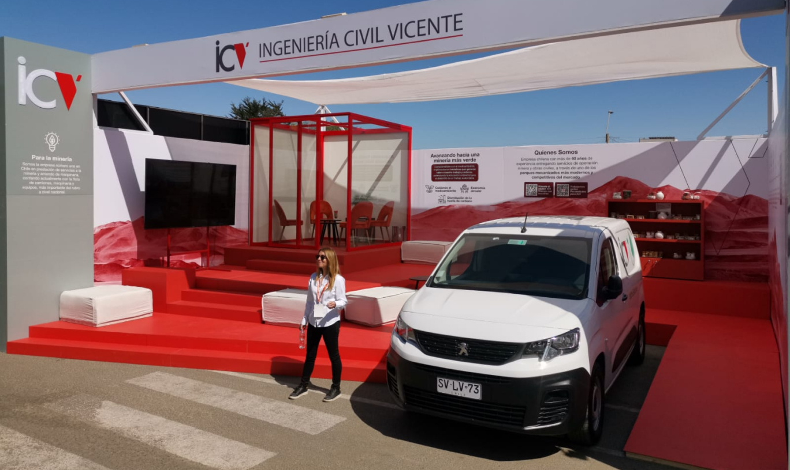
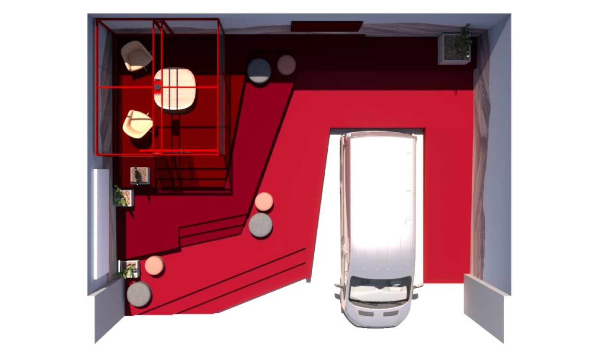
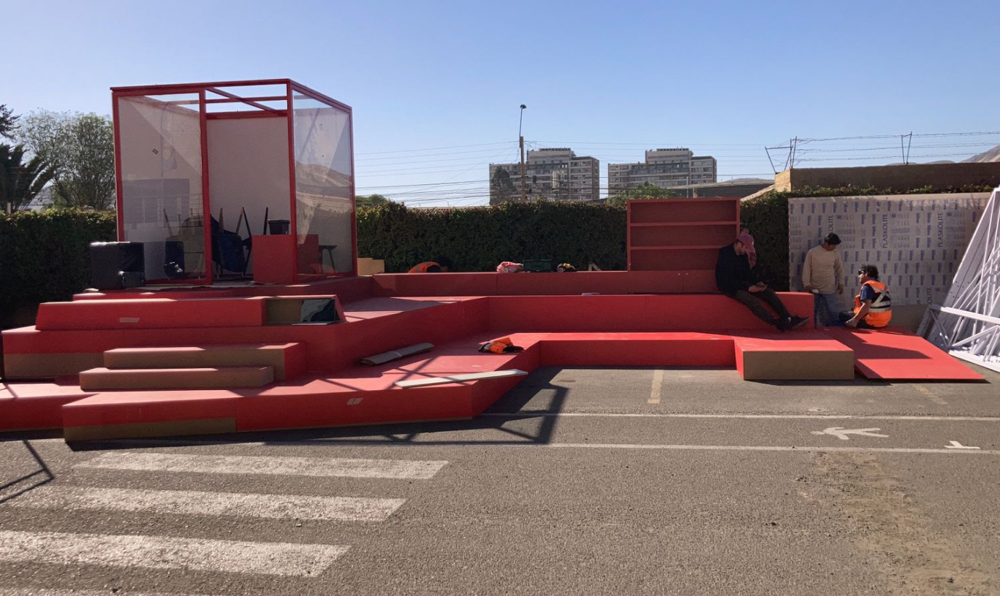
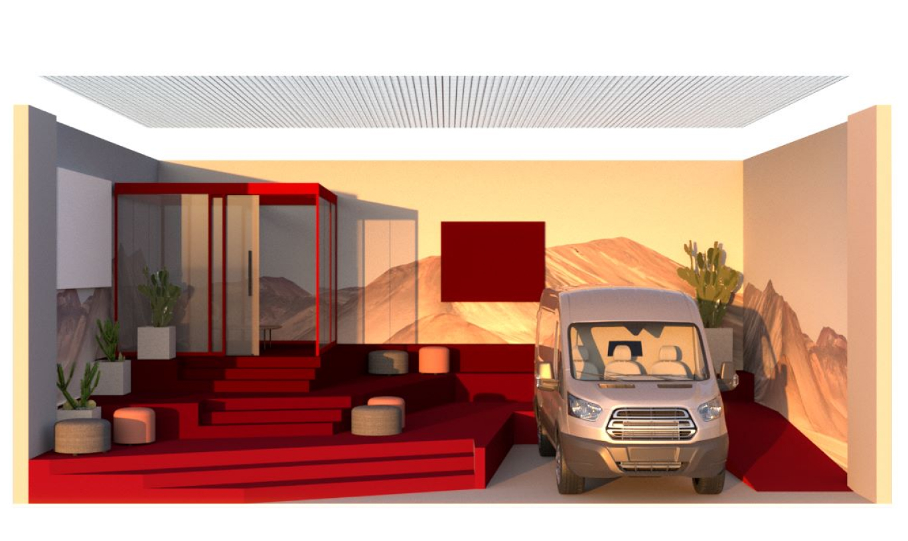
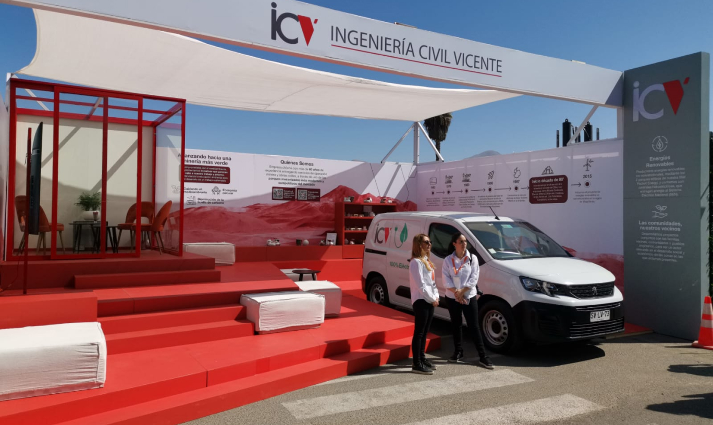

<!-- Modal 10-->
<div class="modal fade modal-xl" id="exampleModal5" tabindex="-1" aria-labelledby="exampleModalLabel" aria-hidden="true">
  <div class="modal-dialog">
    <div class="modal-content">
      <div class="modal-header">
        <button type="button" class="btn-close" data-bs-dismiss="modal" aria-label="Close"></button>
      </div>
      <div class="modal-body">

<div class=" row justify-content-center align-items-center" style="margin-bottom: 40px; margin-top: 40px;">
  <h2 class="text-center col-12 m-0 px-3 py-2" style="font-family:PPMonument; font-size: 48px; ">ICV</h2>
  <p class="text-center text-dark fs-6 fw-light font-family-Helvetica Neue col-12 m-0 px-3 py-2 pb-4">Exhibition Stand Design</p>
<br> <p style="padding-left: 10%; padding-right: 10%;">
  With “mining exhibition name” fast approaching ICV (Ingeniería Civil Vicente) reached out to Pink Dog to create a show stopping stand design. It was imperative that it not only stood out above the competition but was also functional and contained a meeting room for the ICV to use.<br><br>

  Inspired by the tiered shapes of excavation and incorporating a palette of reds reminiscent of Chile's northern soil, the stand was designed to be minimal yet functional. The graphics tell the story of ICVs journey throughout the years and extend onto the digital display where they work together to highlight ICV projects and initiatives. With functionality in mind we created meeting spaces throughout the stand with the addition of soft furnishings and an office space for private meetings, a parking space was included to house one of ICV’s fleet vehicles.<br><br>

  Working with ICV we travelled over 1,200km to deliver and assemble the stand on site, arranging the transportation back to Santiago, for use at future events.
</p>









      </div>
      <div class="modal-footer">

      </div>
    </div>
  </div>
</div>
